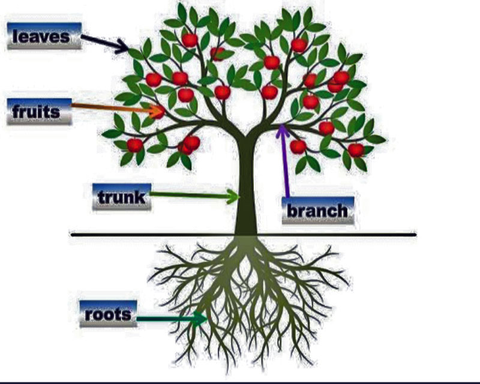

Pambanua Mahusiano yako: zitambue tabia za watu katika maisha yako.
Mahusiano.
Makala yangu inayoitwa “Makundi ya Tabia za Wanadamu” inalenga kuwapa ufahamu wa jumla kuhusu mahusiano ya tabia za watu na jinsi ya kuyatambua. Natumaini umeweza kuipitia na kuelewa namna ambavyo watu wanaweza kugawanyika katika makundi tofauti kulingana na tabia zao. Aidha, natumaini umeweza kujifunza jinsi ya kuwasiliana na watu kutoka makundi mbalimbali. Kwa kuwa na ufahamu huu, nimeona ni vema kuandika makala hii ili kukusaidia kutambua watu binafsi wanaokuzunguka katika maisha yako na pia kuelewa jinsi ya kuwalinda na kuwa na mahusiano bora nao.

Mifumo inayotengeneza mahusiano.
Mfumo wa Malezi: Mfumo huu unahusu jinsi watu wanavyolelewa na kujengewa tabia na maadili katika familia na jamii wanayokulia. Malezi yanaweza kutoa mwongozo wa jinsi ya kuwasiliana na watu, kujenga uhusiano wa karibu, na kuendeleza stadi za kijamii.
Mfumo wa Elimu Rasmi: Mfumo huu unahusisha shule na taasisi za elimu ambapo watu wanajifunza maarifa na stadi za maisha. Elimu rasmi inaweza kujumuisha kufundishwa jinsi ya kujenga uhusiano mzuri na wengine, kujenga stadi za mawasiliano, na kutambua na kuheshimu tofauti za watu.
Mfumo wa Imani: Mfumo huu unahusisha imani za kidini au imani kwa mamlaka ya kiroho. Imani inaweza kutoa mwongozo na mafundisho juu ya jinsi ya kuishi kwa amani na wengine, kusaidia na kuheshimu wengine, na kuunda mahusiano ya kina na mazingira yanayowazunguka.
Katika makala hii, naangazia umuhimu wa mifumo hii katika kuunda mahusiano na jinsi ya kuyapambanua. Nasisitiza kuwa watu wanapaswa kupata ujuzi na uelewa kupitia malezi, elimu rasmi, na imani ili kuelewa na kukabiliana na changamoto zinazojitokeza katika mahusiano. Pia, naelezea umuhimu wa kutambua tabia za watu wanaokuzunguka na kuelewa nafasi yao katika maisha yako. Hivyo, makala hii inalenga kutoa ufahamu juu ya tabia za watu na jinsi ya kuwa na mahusiano mazuri na wengine katika mazingira yako.
Aina za mahusiano.
- Mahusiano ya udugu: Baba, Mama, Mtoto, Kaka, Dada, Mjomba, Shangazi na binamu.
- Mahusiano ya kimapenzi: Mchumba, Mume na Mke.
- Mahusiano ya kikazi: Mwajiri na mwajiriwa.
- Mahusiano ya kijamii: Urafiki, Ujirani, Ukoo, Kabila, Utaifa na Utu.
- Mahusiano ya kiimani: Mungu na Wanadamu, Dini na Waumini.
mahusiano haya yanategemeana katika nyanja tofauti na yanaweza kuwa na athari kubwa katika maisha ya wanadamu. Mahusiano ya kifamilia, kimapenzi, kikazi, kijamii, na kiimani yote yanachangia katika muundo na uzoefu wa maisha yetu. Katika mahusiano ya kirafiki, tunajenga uhusiano na watu ambao hatujaunganishwa nao kwa damu au ndoa, lakini tunashiriki maslahi, maadili, na shughuli za kawaida. Mahusiano haya yanaweza kuwa na siri nyingi zaidi kwa sababu mara nyingi tunaweka imani na matumaini yetu kwa marafiki zetu. Tunashirikiana nao matatizo yetu, furaha zetu, na ndoto zetu. Marafiki wanaweza kuwa nguzo muhimu katika maisha yetu na wanaweza kutusaidia kukua kibinafsi na kijamii.
Hata hivyo, ni kweli kwamba mara nyingine tunaweza kushindwa kutofautisha kikamilifu kati ya aina tofauti za mahusiano. Kuna mipaka isiyo wazi kati ya marafiki na familia, kati ya mahusiano ya kimapenzi na mahusiano ya kazi, na kadhalika. Kila uhusiano una sifa zake za kipekee na inaweza kuchanganyika na mengine, ikifanya kuwa changamoto kuweka mipaka wazi. Ni muhimu kwa kila mtu kutambua na kuheshimu tofauti kati ya mahusiano haya na kuweka mawasiliano na mipaka sahihi. Hii inaweza kusaidia kuzuia mtafaruku na kudumisha ustawi katika maisha yetu. Pia.
Mahusiano ya kimapenzi.

Katika mada hii, tunazungumzia tofauti kati ya hisia za kimapenzi na mahusiano ya kimapenzi. Mara nyingi watu huchanganya mawazo haya mawili na kusababisha matatizo katika mahusiano yao. Hisia za kimapenzi ni hisia ambazo mtu anazipata kwa mtu mwingine, wakati mahusiano ya kimapenzi ni uhusiano wa karibu na mtu huyo.
Ingawa mtu anaweza kuwa na hisia za kimapenzi kwa mtu mwingine, si lazima waweze kujenga mahusiano mazuri ya kimapenzi. Mahusiano ni taaluma na inahitaji jitihada na ujuzi wa kujenga uhusiano mzuri. Hisia za kimapenzi zinaweza kuwepo bila kuwepo kwa uhusiano mzuri, na vivyo hivyo, uhusiano mzuri unaweza kuwepo hata kama hakuna hisia za kimapenzi zilizopo. Ni muhimu kutofautisha kati ya hisia na taaluma ya mahusiano ili kuepuka kuumiza hisia za watu kwa sababu ya kutokuwa na ujuzi wa kujenga mahusiano bora. Hii ni muhimu si tu katika mahusiano ya kimapenzi, lakini pia katika mahusiano ya kifamilia, ambapo ndugu wanaweza kukosa uelewano kutokana na kutokuwa na ujuzi wa mahusiano bora.Ni muhimu kuelewa kwamba mahusiano ni mchakato wa kujifunza na kukua, na tunaweza kujifunza kutoka kwa uzoefu wetu na kufanya maboresho yanayohitajika ili kujenga mahusiano yenye afya na yenye furaha.
Mahusiano ya Kijamii.

Katika mahusiano ya kijamii, urafiki ni muhimu sana. Urafiki ni uhusiano ambao unaweza kujengwa na watu katika makundi yote ya kijamii. Urafiki unaweza kuwepo kati ya wazazi na watoto, kati ya mke na mume, kati ya ndugu, kati ya watu wa kabila moja au taifa moja, au hata kati ya watu wa chama fulani. Urafiki ni msingi muhimu katika jamii yetu. Urafiki una sifa maalum ambazo zinamfanya mtu kuwa rafiki bora kwako. Sifa hizo zinajumuisha uaminifu, upendo, uelewa, kusikilizana, na mshikamano. Katika urafiki, watu hujenga uhusiano wa karibu na kushirikiana katika furaha na huzuni. Rafiki ni mtu unayeweza kumtegemea, kumwamini.
Ili kujenga urafiki bora, ni muhimu kujenga mazingira ya kuaminiana na kuheshimiana. Kusikiliza na kuelewa hisia na mawazo ya rafiki yako ni muhimu sana. Kuonyesha upendo, kujali, na kuthamini urafiki ni njia nzuri ya kudumisha uhusiano huo. Aidha, ni muhimu kuwa na mshikamano na rafiki yako katika nyakati za shida na kumpa msaada unaohitajika. Ni muhimu pia kujua kuwa urafiki ni uhusiano unaohitaji jitihada na muda. Inahitaji kuwekeana wakati, kushirikiana katika shughuli za pamoja, na kuendelea kuweka mawasiliano na rafiki yako. Kama ilivyo katika mahusiano mengine, urafiki unaweza kuwa na changamoto na migogoro, lakini ni muhimu kushughulikia matatizo hayo kwa mazungumzo na uelewa.
Kwa kumalizia, urafiki ni muhimu katika mahusiano ya kijamii. Ni uhusiano wa pekee ambao unavuka vikundi na unaweza kuwepo katika maeneo yote ya maisha yetu. Kujenga urafiki bora kunahitaji uaminifu, upendo, uelewa, kusikilizana, na mshikamano. Ni jukumu letu kujenga na kudumisha urafiki bora na kumlinda rafiki anayetuona kuwa wa thamani katika maisha yetu.
Sifa pekee za Mahusiano ya Kirafiki.
- Urafiki haubagui kada, imani, umri, jinsia wala wasifu.
- Urafiki ni uhusiano unaotokana na maamuzi binafsi, hautokani na asili ya kibinadamu wala mazingira.
- Urafiki hauna mashindano.
- Urafiki ni daraja la kuunganisha aina zingine zite za mahusiano.
Kwa sifa hizo chache, tunaweza kuona ni namna gani aina hii ya mahusiano inaweza kujenga jamii au kubomoa jamii hiyo hiyo kiurahisi sana. Kwa sababu ya sifa hizo zenye upekee, tuangazie ni tabia gani ambazo zinajificha nyuma ya mahusiano haya ya Urafiki. Na katika kuzichambua tabia hizo, kwa mara nyingine tena nitatumia mfano wa tabia za MTI.
Sifa za Tabia katika Urafiki.
Ninaweza kutumia mfano wa mti na sehemu zake kuelezea sifa zilizojificha katika marafiki zetu. Kama vile mti unavyojumuisha sehemu kuu nne, vivyo hivyo marafiki zetu wanaweza kuwa na sifa tofauti ambazo zinaathiri ustawi wetu katika maisha yetu. Hebu tuangalie sehemu hizo za mti na sifa zinazohusiana:
Mizizi: Mizizi ya mti ni sehemu iliyofichika chini ya ardhi na inayosaidia mti kunyonya virutubisho na maji. Katika urafiki, marafiki wa kweli wana sifa ya kuwa waaminifu na wa kweli. Wanakuwa nguzo imara katika maisha yetu, wakituunga mkono na kutusaidia katika nyakati ngumu. Marafiki wenye mizizi imara ni watu ambao tunaweza kuwategemea na kujua kwamba watasimama pamoja nasi katika kila hali.
Shina: Shina la mti linawakilisha nguvu na uimara. Katika urafiki, marafiki wenye shina imara ni wale ambao wana nguvu ya kusimama imara na kushughulikia changamoto za maisha. Wanakuwa na ujasiri, uvumilivu, na utulivu katika nyakati za msukosuko. Marafiki wenye shina imara ni wale ambao wanatupa nguvu na kutusaidia kukua na kuendelea mbele.
Matawi: Matawi ya mti huenea na kutoa nafasi ya kusambaza nuru na riziki kwa mti wote. Katika urafiki, marafiki wanaokuwa matawi wanakuwa na sifa ya kujali na kusaidia wengine. Wanajitolea kwa ajili ya wenzao na kusambaza upendo, faraja, na msaada. Marafiki wenye matawi mazuri ni wale ambao wanaeneza upendo na kuleta furaha kwa wote wanaowazunguka.

Matunda: Matunda ya mti ni matokeo ya ukuaji mzuri na afya ya mti. Katika urafiki, marafiki wenye matunda ni wale ambao wanakuwa na matokeo mazuri katika maisha yao. Wanakuwa na mafanikio na furaha, na wanatupa hamasa na msukumo wa kufikia malengo yetu. Marafiki wenye matunda ni wale ambao wanatuchochea kufanya vizuri na kuwa bora zaidi.
Kwa hiyo, kama vile mti unavyohitaji mizizi imara, shina lenye nguvu, matawi yenye upendo, na matunda mazuri, vivyo hivyo tunahitaji marafiki wenye sifa hizo. Ni muhimu kuchagua marafiki ambao wanaleta athari chanya katika maisha yetu na kutusaidia kukua na kustawi. Kila rafiki ana nafasi yake na anaweza kutufaa katika njia tofauti katika maisha yetu. Tunapaswa kutambua ni marafiki gani wanaweza kutusaidia katika wakati fulani na kwenye eneo fulani la maisha yetu. Kama vile sehemu za mti zinavyofanya kazi kwa pamoja kutoa uimara na matokeo mazuri, vivyo hivyo marafiki wetu wanaweza kuchangia katika ustawi wetu wa kijamii, kiakili na kiroho.
Hitimisho.
Ni muhimu kuwa na ufahamu wa hali na mahitaji ya marafiki zetu ili kuweza kuweka mipaka na kutoa muda wetu kwa njia inayofaa. Hatupaswi kuwalaumu au kugombana na rafiki ambaye hana uwezo wa kutimiza mahitaji yetu yote, badala yake tunaweza kuwapa marafiki wetu fursa ya kuwa sehemu muhimu katika maisha yetu kulingana na uwezo wao na sifa zao za kipekee.
Kwa mfano, marafiki ambao ni kama “mizizi” wanaweza kutusaidia wakati tunahitaji msaada wa kuwa imara na waaminifu. Marafiki ambao ni kama “shina” wanaweza kutusaidia kujenga ujasiri na uvumilivu katika maisha yetu. Marafiki ambao ni kama “matawi” wanaweza kutusaidia kusambaza upendo na faraja katika nyakati za furaha na huzuni. Na marafiki ambao ni kama “matunda” wanaweza kuleta mafanikio na furaha katika maisha yetu.
Kwa kuhitimisha, ni muhimu kuelewa kwamba kila rafiki ana nafasi yake na tunaweza kuwapa kila mmoja wao muda na nafasi inayostahili. Hii inatusaidia kuepuka migogoro na kukosana na marafiki zetu. Tunaweza kuwapokea na kuwathamini marafiki wetu kwa njia ambayo wana mchango wao maalum katika maisha yetu, na kuwa nao karibu kutupatia ladha nzuri ya maisha yetu.